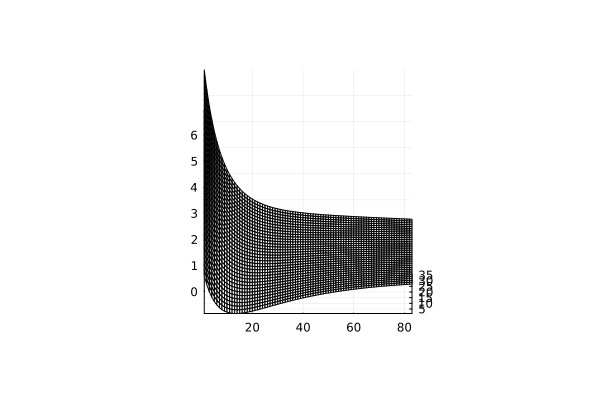

熱力学の関係式を整理しよう
気体が平衡や平衡に近いとき、その気体の熱力学変数がファンデルワールス状態方程式を満たすような場合を考えます。
$$ {\large P = \frac{nRT}{V-nb} - a{ \left( \frac{n}{V} \right) }^2 } $$

ファンデルワールスeqの概形。高さが圧力、奥に向かって温度が上がる。右方向が体積。軸の数値はいずれも正しい数値ではないので注意。(修正予定 )
このとき、圧力がほかの熱力学量の関数として表現できている、と解釈できます。
$${\large P = \frac{nRT}{V-nb} - a{ \left( \frac{n}{V} \right) }^2 = P(T,V)}$$
VとTを系の独立変数として決定すると、気体の系の熱力学的な平衡状態は十分に指定されると仮定します。
気体の出入りはなくて、構成分子の個数Nは変わらないとします。
気体の熱力学的な表現を思い出しましょう。
\(U\)は気体の内部エネルギー、\(T\)は温度、\(S\)はエントロピー、 \(P\)は圧力、 \(V\)は体積として、
$$ dU = TdS - PdV $$
が
平衡状態の間の変化で成立します。(一般の変化では成立しないです。
例えば、準静的でない変化を通して、非平衡的な状態に移り変わるとこの関係は成り立ちませんから。)
いま、V、Tを独立変数として系を考えると便利なので、少し表現を改めます。
$$ dU = TdS - PdV=d(TS)- SdT - PdV$$
$$ d(U - TS) = -SdT -PdV $$
\(U - TS\)には名前が付けられています。
ヘルムホルツの自由エネルギー\(F\)です。
\( F \equiv U - TS \)として、
$$ {\large dF = -SdT -PdV } $$
$$ \left( \frac{\partial F}{\partial V}\right)_T = - P $$
$$ \left( \frac{\partial F}{\partial T} \right)_V = -S$$
が成立します。\(F\)の温度を固定した時の体積に対する変化率が圧力に対応していることがわかります。
つまり、圧力を体積で定積分すればヘルムホルツの自由エネルギーが求まります。
いま、状態方程式\(P(T, V)\)がわかっているので、この計算は実行できます。
エントロピーや比熱の関数形
Fの体積を固定した時の温度に対する変化率がエントロピーです。
$$ \left( \frac{\partial F}{\partial T} \right)_V = -S$$
そして定積比熱\(C_V\)は次のように与えられます。
$$
C_V \equiv T \left( \frac{\partial S}{\partial T} \right)_V
$$
これは、\(dQ = T d S \)が、準静的な変化で成立することから納得できます。
先ほど得たヘルムホルツエネルギーの関数形から、
$$S = nR\ln(V - nb) - A'(T)$$
$$C = -TA''(T)$$
を得ます。
ここで、注目するべきものは比熱の形です。温度に依存する関数\(A(T)\)（の二回微分）で与えられています。
\(A(T)\)は体積の積分の際に勝手に用意した関数です。
これはつまり、ファンデルワールス状態方程式は比熱の関数形を全く決定しないこと(もちろんエントロピーも)を意味します。
しばしばファンデルワールス気体は定積比熱が定数とされます。
しかし、ファンデルワールス状態方程式を満たすからといって必ずしも比熱が定数になるとは限らない、ということがわかりました。
比熱の形を決定するのならば、状態方程式以外の部分に根拠を求めるべきだ、という解釈もできます。
例えば、熱力学だけではなく統計力学の立場からも物理系を考えてみれば、エントロピーの形までもとまるかもしれません。
実際に、統計力学からファンデルワールス状態方程式を導くミクロな物理系を考えることはできます。いつか記事を作ります。
今回はここまでです。ご覧いただきありがとうございました。